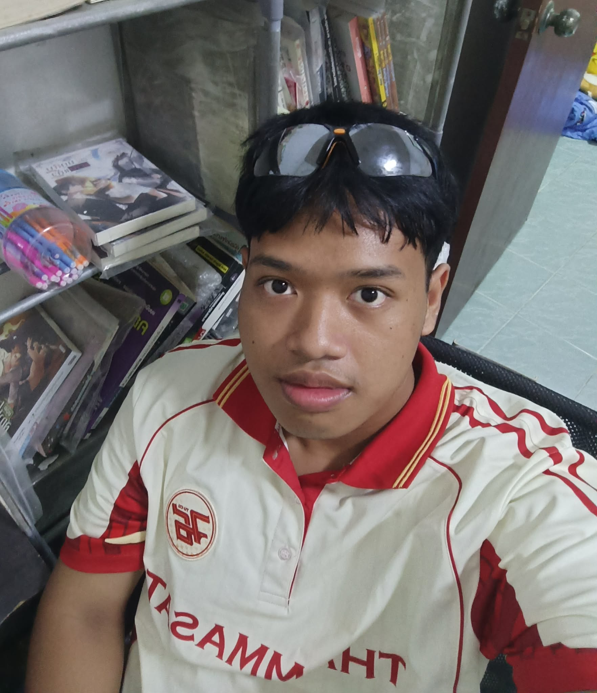

About Me

ชื่อ: นายจิตติพัฒน์ ภูโคตรศรี
รหัสนักศึกษา: 6909546027
สาขา: วิทยาการคอมพิวเตอร์
What I Built
งานนี้เป็นเว็บไซต์ Learning Portfolio แบบหน้าเดียว สร้างด้วย HTML และ CSS
ภายในเว็บไซต์มีข้อมูลแนะนำตัว อธิบายงาน วิธีการสร้าง และการสะท้อนผลการเรียนรู้
เมื่อเปิดไฟล์บนเครื่องของตนเอง จะมี Client คือเว็บเบราว์เซอร์ ส่วน Server ยังไม่มี เพราะเป็นการเปิดไฟล์ HTML โดยตรง
How I Built It
- สร้างไฟล์ index.html
- สร้างไฟล์ style.css
- เพิ่มข้อมูลแต่ละหัวข้อ
- ตกแต่งเว็บไซต์ด้วย CSS
เครื่องมือที่ใช้
- Visual Studio Code
- Google Chrome
- ChatGPT
เว็บไซต์ที่ใช้ศึกษาเพิ่มเติม : w3schools
Reflection
ปัญหาที่พบ
ช่วงแรกยังไม่เข้าใจการจัดโครงสร้าง HTML และการเชื่อมไฟล์ CSS แต่ทดลองแก้ไขและค้นหาข้อมูลเพิ่มเติมจนสามารถทำได้
สิ่งที่ได้เรียนรู้
เข้าใจการสร้างเว็บไซต์ด้วย HTML และการตกแต่งด้วย CSS มากขึ้น
สิ่งที่อยากพัฒนาต่อ
อยากเพิ่มการจัดวางหน้าเว็บให้สวยขึ้นและทำเว็บไซต์ให้รองรับการแสดงผลบนโทรศัพท์มือถือ